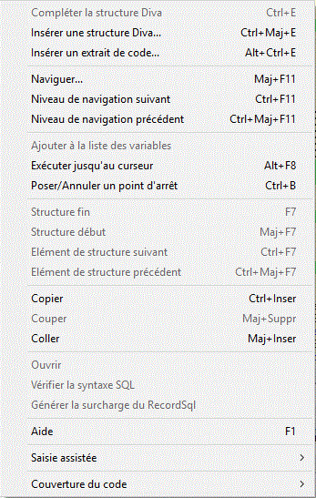
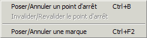

L'éditeur de texte propose deux menus contextuels, selon le lieu d'appel.
Souris à l'intérieur d'une fenêtre MDI de type texte et hors marge :

Compléter la structure Diva / Insérer une structure Diva... / Insérer un extrait de code... :
Fonctionnalités de l'outil d'insertion d'extraits de code de Xwin qui permettent respectivement de compléter le code d'une structure Diva standard préexistante, d'insérer le code d'une structure Diva standard et d'insérer un bout de code enregistré dans un fichier d'extrait personnel.
Naviguer : Recherche une entité syntaxique avec saisie du nom de cette entité.
Niveau de navigation Suivant / Précédent : Avancée ou recul d'un niveau dans l'historique de navigation.
Ajouter 'xxxxx' à la liste des variables : Ajoute le mot pointé par le curseur souris dans la fenêtre "Variables".
Exécuter jusqu'au curseur : Le débogueur poursuit l'exécution du programme, jusqu'à rencontre de la ligne pointée par le curseur souris. Il interrompt l'exécution sur cette ligne, comme si un point d'arrêt y était défini.
Poser / Annuler un point d'arrêt : Place ou annule un point d'arrêt sur la ligne pointée par le curseur souris.
Structure début / fin, Elément de structure suivant / précédent : Pour que ce(s) choix soient actifs, il faut cliquer droit sur une parenthèse (ouvrante ou fermante), un crochet (ouvrant ou fermant) ou un mot clé faisant référence à une structure de contrôle Diva (exemples : Switch – Endswitch, Beginp – Endp, If – Else – Endif). Permettent alors de se positionner au début, à la fin ou sur un élément intermédiaire de la structure.
Copier : Copie la sélection ou la ligne courante dans le presse-papiers.
Couper : Détruit la sélection avec recopie dans le presse-papiers.
Coller : Insère le contenu du presse-papiers dans le texte.
Ouvrir fichier : Ouvre le fichier source fichier.
Ce choix est actif uniquement lorsque la souris est placée sur un mot (ou, dans certains cas, sur une ligne) contenant le nom d'un fichier source ou objet "Xwin" (.dhsp, .dhsd, .dhsf, .dhsi, .dhsq, ...).
Vérifier la syntaxe SQL : Sauvegarde et vérifie la syntaxe du fichier dictionnaire de RecordSql courant (utilitaire xRecordSqlCheck).
Générer la surcharge du RecordSql / Join : Appelé depuis un dictionnaire Sql de base (ou depuis un dictionnaire Sql de surcharge de niveau inférieur, puisque la surcharge est possible à plusieurs niveaux), ce choix génère une amorce de RecordSql / Join à la fin du source de surcharge. Le source de départ doit comporter l'attribut OverWrittenBy dans sa balise d'en-tête <DictionarySql / DictionaryJoinSql>. En cas de surcharge à plusieurs niveaux, le source où a lieu la génération est le dernier source de surcharge "en ligne". La génération n'est effective que si le RecordSql / Join surchargé n'existe pas déjà dans le source d'arrivée.
Aide : Si vous avez cliqué droit sur un mot, appelle l'aide en ligne en fournissant ce mot comme index. Par exemple, vous voulez consulter la documentation des fonctions de gestion de fichiers Hread et Hwrite ; vous appelez le choix Aide après avoir cliqué droit sur le mot :
1. Hread : Affiche directement la documentation de la fonction Hread.
2. Hwrit : Comme cette chaîne n'est pas un mot réservé du langage Diva, affiche la table d'index avec Hwrit comme valeur initiale, ce qui présélectionne l'index Hwrite dans la liste ; double-cliquez sur la ligne sélectionnée pour afficher la documentation de la fonction Hwrite.
Saisie Assistée : Liste des membres : Affiche la fenêtre "Liste des membres" de la saisie assistée.
Saisie Assistée : Informations sur les paramètres : Affiche la fenêtre d'information sur les paramètres de la fonction en cours.
Saisie Assistée : Compléter le mot : Complète le mot en cours si aucune ambiguïté ne subsiste (sinon, affiche la fenêtre "Liste des membres").
Couverture du code : ... : Cf. Le menu du débogueur (sous-menu "Couverture du code").
Souris dans la marge d'un texte (partie Gauche de la marge, curseur souris en forme de flèche pointant au NO) :

Poser/Annuler un point d'arrêt : Place ou annule un point d'arrêt sur la ligne pointée par le curseur souris.
Invalider/Revalider le point d'arrêt : Invalide ou revalide le point d'arrêt déjà posé sur la ligne pointée par le curseur souris.
Poser/Annuler une marque : Place ou annule une marque sur la ligne pointée par le curseur souris.